三亚海棠湾
FOREWORD：
7 月 2 日凌晨坐上去长沙的绿皮车，再从长沙飞到三亚。原本以为这会是一趟标准的海边度假，结果几天里遇到了台风、暴雨、免税城、漏水坐垫、奇怪水果和离岛前一晚的晚霞。
行程时间线
- 7.2：凌晨坐绿皮车去长沙，早上从长沙黄花机场飞三亚，中午抵达海棠湾民宿，下午补觉。
- 7.3：天气变差，下楼去沙滩失败，改去 CDF 免税城，晚上遇到台风返程。
- 7.4：天气稍微恢复，去 CDF 提货，吃海棠渔家，晚上骑车逛到 68 夜市。
- 7.5：天气不错，林旺夜市来回折腾，电动车坏了，坐垫漏水，买了荔枝和榴莲蜜。
- 7.6：换到亚龙湾海景国际酒店，体验游船和海钓，晚上吃糟粕醋火锅、看晚霞、去 ONE 沙滩酒吧。
- 7.7：中午飞长沙，下午回武汉，晚上用老街烧烤结束旅行。
7.2 出发与抵达海棠湾
凌晨到早上：绿皮车和长沙黄花机场
7 月 2 日凌晨 1 点，先坐绿皮车前往长沙。这个时间点出门，基本上就是一边困一边机械地往前走。到了早上 8 点，又在长沙黄花机场登上前往三亚的飞机。
飞机早餐不太行，尤其是我点的面，不好吃。炒饭稍微强一点点，但也只是强一点点。好在航班本身就是旅行开始的信号，困归困，看到窗外的云之后，还是有一点要去海边的实感了。
从长沙飞往三亚，先把困意带到云上。
中午到晚上：到民宿、看海、补觉
中午抵达三亚海棠湾预定的民宿。楼上风景非常不错，当天天气也很好，阳台外面就是海、云、酒店群和很开阔的海岸线。


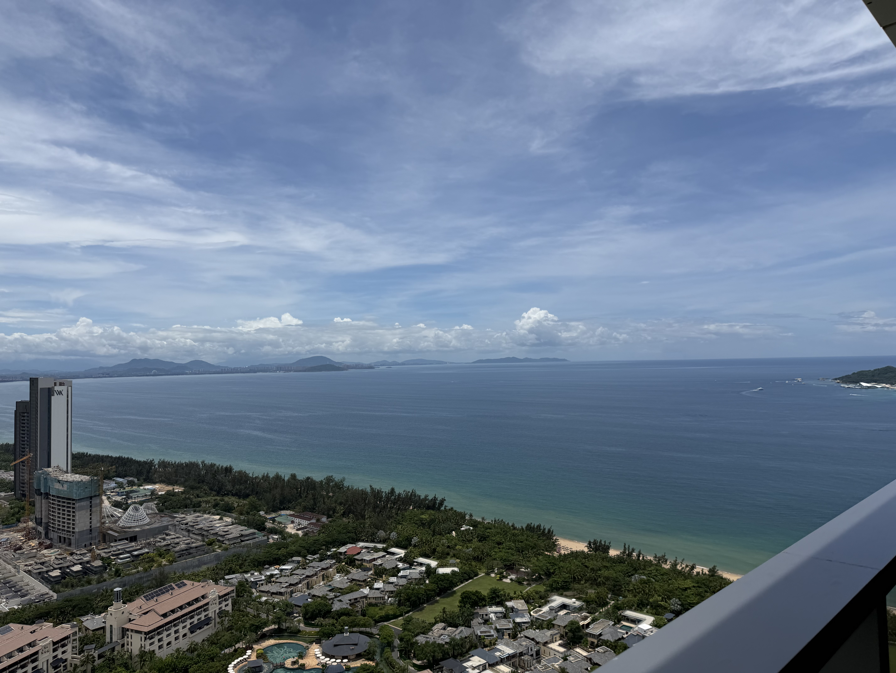
海棠湾第一眼，视野比想象中开阔。
但一整晚几乎没怎么睡，又是绿皮车又是飞机，人已经被舟车劳顿打趴了。下午没有硬安排任何项目，直接睡觉。晚上点了一家海南家常菜外卖，味道还不错，于是第一天就在补觉和外卖里平稳落地。
7.3 沙滩、CDF 和台风返程
下午：下楼去沙滩失败
7 月 3 日天气就不太好了，开始乌云密布，还时不时下阵雨。下午的时候趁着没下雨，想着去楼下沙滩玩一会儿，结果没走几步雨就来了。
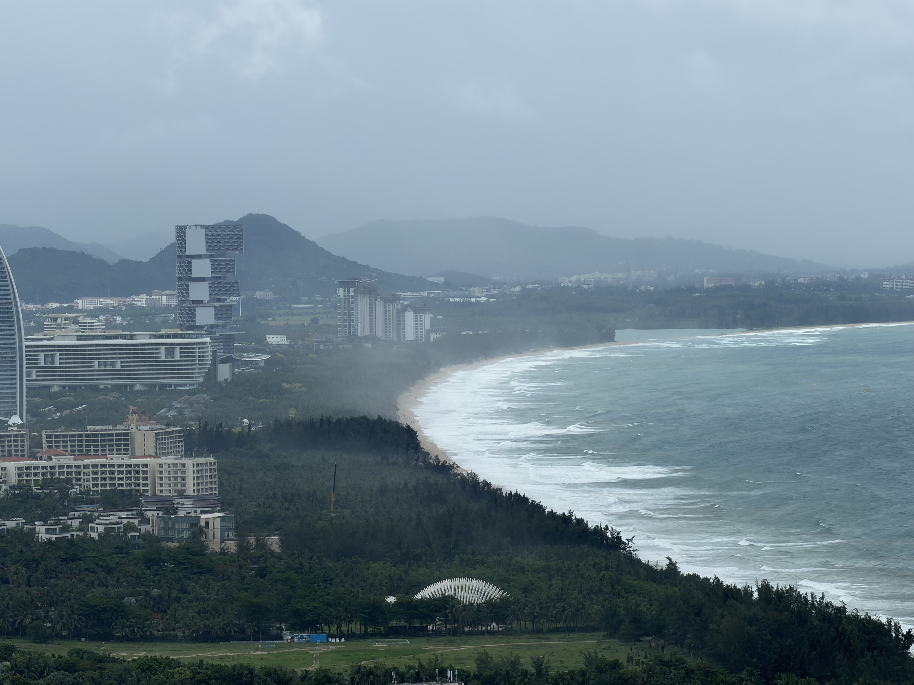
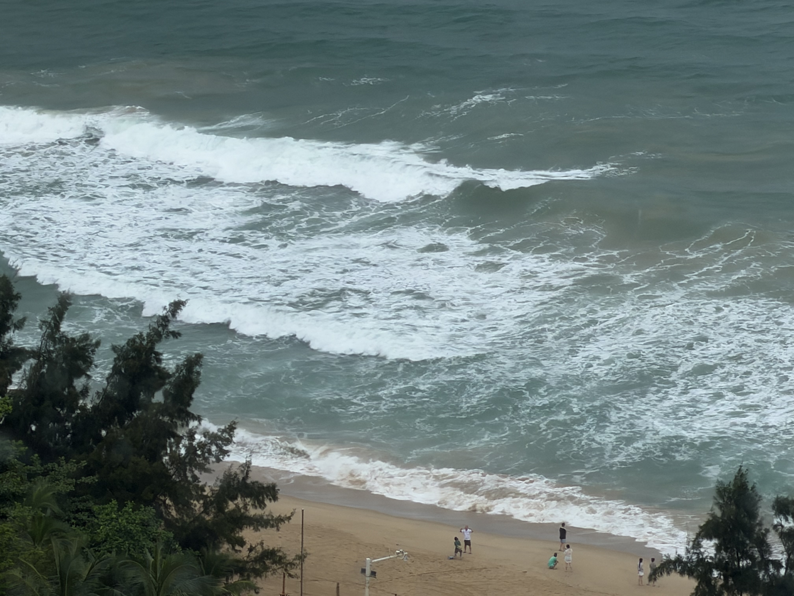
下楼前的天色已经很不对劲。
雨来得很快，只好先在一把小伞下面躲了几分钟。沙滩近在眼前，但天色和雨势都在提醒我们：这一趟海边计划可能要临时改成室内项目。

原本想去沙滩，最后被天气劝退。
下午到傍晚：改去 CDF 免税城
看着雨稍微变小，我们决定直接出发去 CDF 免税城。海边玩不成，至少室内还能逛。
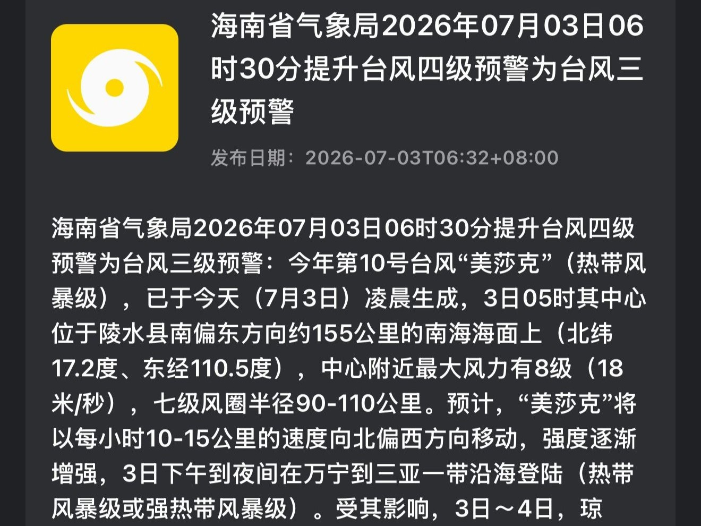
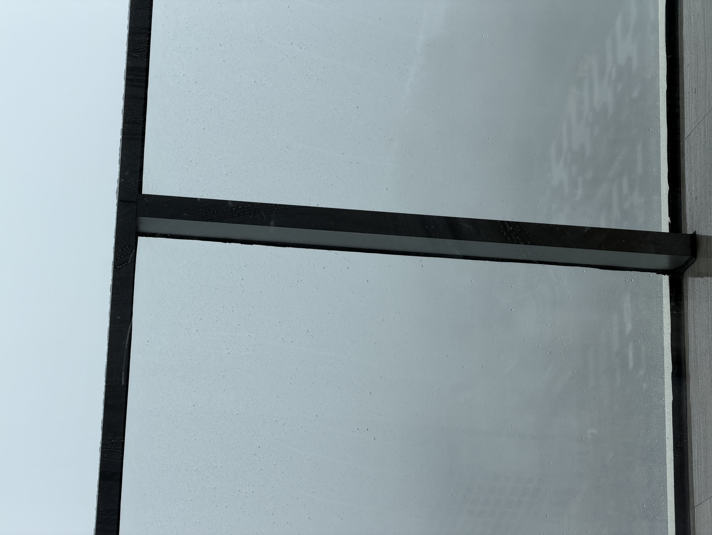
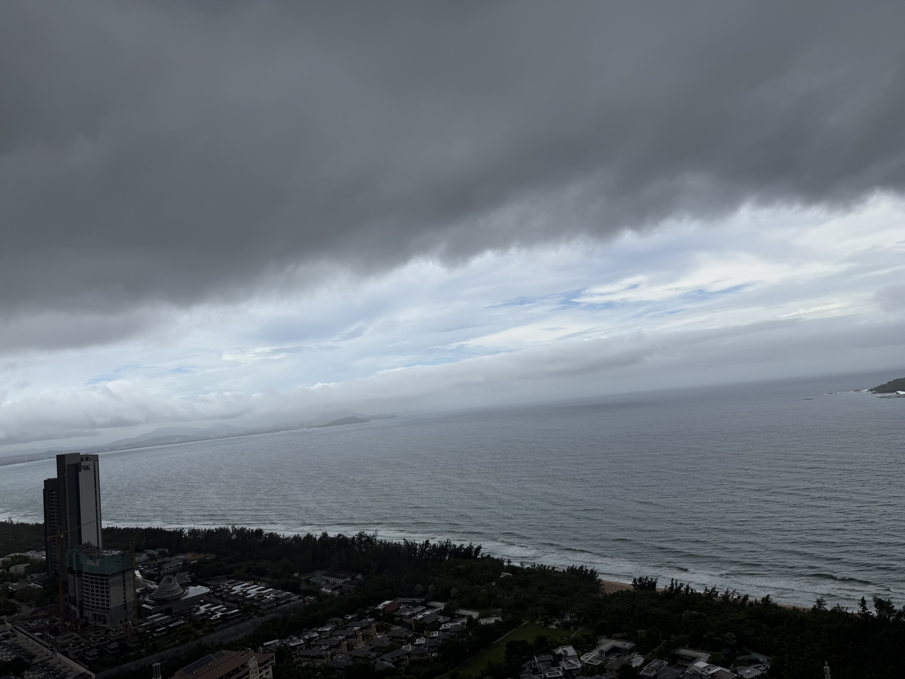
预警、雨雾和短暂的停歇，三亚的天气在一天里切了好几种状态。
在免税城逛了一下午，把该看的都看完，又预定了一些化妆品，等回家机票买好之后再提货。虽然是被天气赶进室内，但 CDF 也算把这天下午完整接住了。
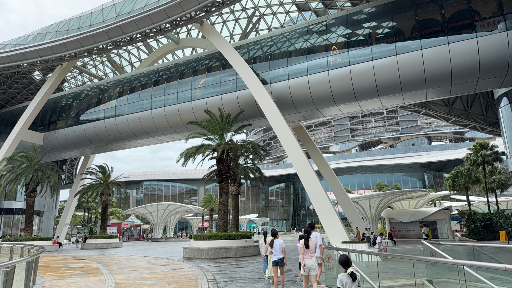

台风天的主要活动：逛 CDF。
晚上：狂风大作，打车失败
晚上狂风大作，台风登陆三亚，回去就没那么顺利了。打车也打不到，最后是 CDF 安排了专车送我们回酒店。
下车点到公寓大堂还有一段路，地上全是折断的树枝。走过去不太现实，我们就改从最近的地下停车场上楼。

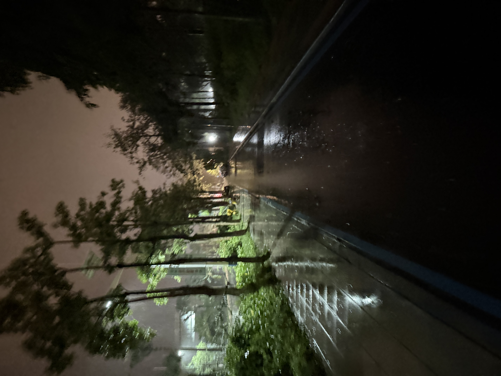
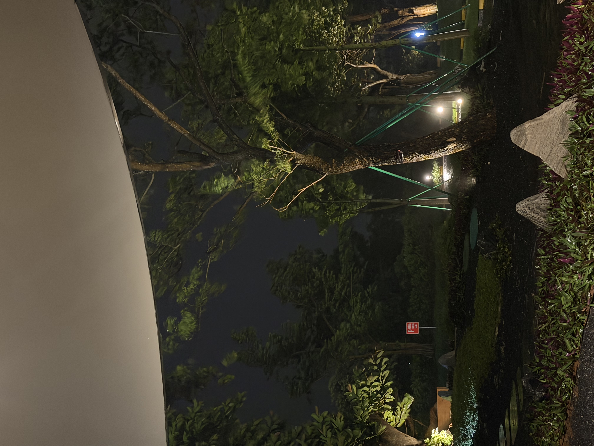
从 CDF 回去的路上，雨和风已经很认真了。
回到房间之后继续吃海南家常菜外卖。出门的时候是度假，回来的时候像刚完成一次台风天气生存挑战。
7.4 提货、海棠渔家和夜市
白天：CDF 提货和海棠渔家
7 月 4 日天气稍微好点，趁着没下雨，先去 CDF 纪梵希提货。之后又前往 CDF 二期逛了一下，发现不太好玩，就打车去吃饭。
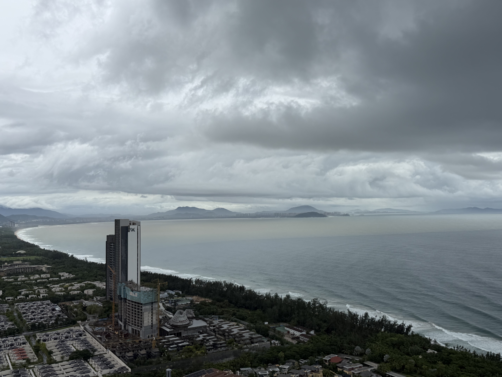
暴风雨过后的海棠湾，路面和天空都还没完全恢复。
午饭吃海棠渔家，挺好吃的。经历了一天外卖和台风之后，能坐下来吃一顿正经饭，体验明显稳定很多。


台风之后吃到的一顿正经海鲜饭。
吃完又打车回 CDF，帮酥鱼买了支口红。之后去祖玛珑闻了一下香水，发现还不错，就买了一点。再去林旺夜市买了点水果，一个大芒果和红毛丹。红毛丹感觉不好吃，三亚水果第一局没有完全赢。
晚上：骑车绕到 68 夜市
回酒店之后，晚上又出去逛了逛。骑了一辆共享单车，开了一大圈，路过亚特兰蒂斯附近的 68 夜市。


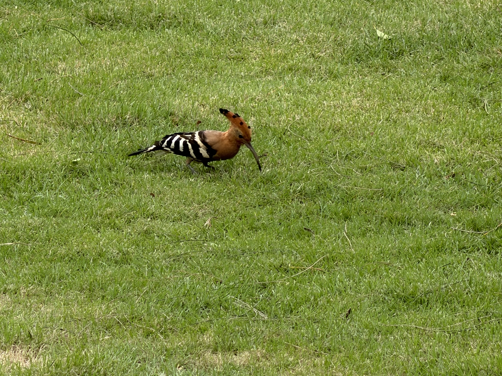

雨停之后，海棠湾终于恢复了一点适合散步的样子。
在 68 夜市买了一个火参果，又买了一个椰子。晚上还点了一个肯德基夜宵，甜辣鸡架味道还不错，算是这一晚的稳定发挥。

68 夜市买到的火参果，长得比味道更有记忆点。
吃完后走到红树林酒店附近找到了一辆共享单车，骑回去还车之后才发现坐垫漏水，应该是前一天下暴雨渗进去的，只能灰溜溜跑回酒店。
7.5 林旺夜市二刷和奇怪水果
白天：电动车坏了，坐垫又漏水
7 月 5 日天气不错，原本打算骑电动车去林旺夜市。中间车坏了，换了一辆车，结果坐垫漏水，裤子直接湿了。
路上买了个西瓜，不巧的是林旺夜市附近共享单车被交警扣了，只好打车先回酒店，换裤子，吃西瓜。这个上午的行程总结起来就是：天气变好了，但交通工具开始出问题。
晚上：荔枝、榴莲蜜和火参果
弄好之后，晚点又出发，骑共享单车去林旺夜市。这次买了一斤超大荔枝和一个榴莲蜜。
榴莲蜜吃起来粘不拉几，嚼不烂，还有一股鞋子进水之后的臭袜子味，不过挺甜的，最后还是捏着鼻子吃完了。荔枝还行，但可能因为太大了，不是很甜，也不算特别新鲜。

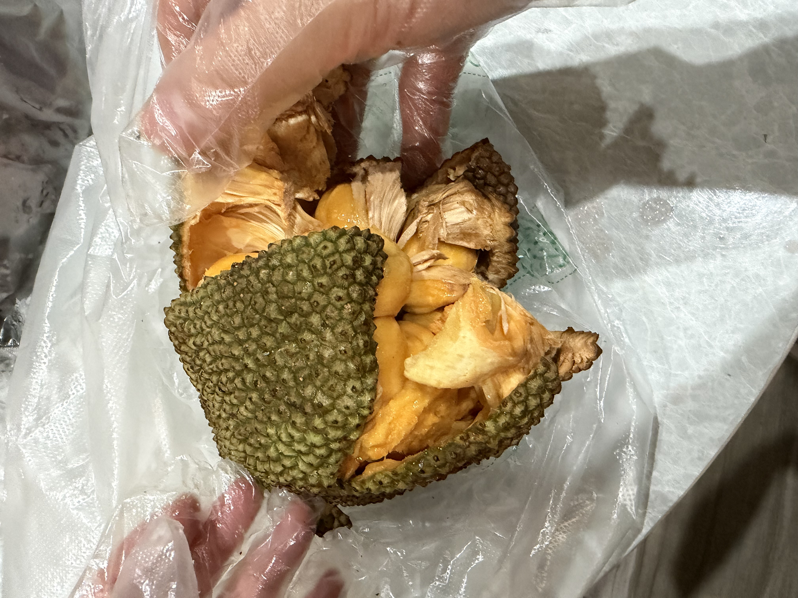
林旺夜市水果第二局：荔枝还行，榴莲蜜很难评价。
吃完这些，又把前一天买的火参果开了。里面是一些类似黄瓜瓤的东西，黄色的外壳下面是浅绿色的汁液和结构奇特的籽。味道没有外表那么有冲击力，但确实很适合被记住。
7.6 转去亚龙湾
上午到下午：换酒店和免费游船项目
7 月 6 日上午收拾东西，转去亚龙湾海景国际酒店。吃完麦当劳，把东西放到房间，就出发去酒店提供的免费游船项目。
先从码头坐小游艇前往大游艇。天气还是阴阴的，但至少不用再躲台风，海面项目终于能正常开始。
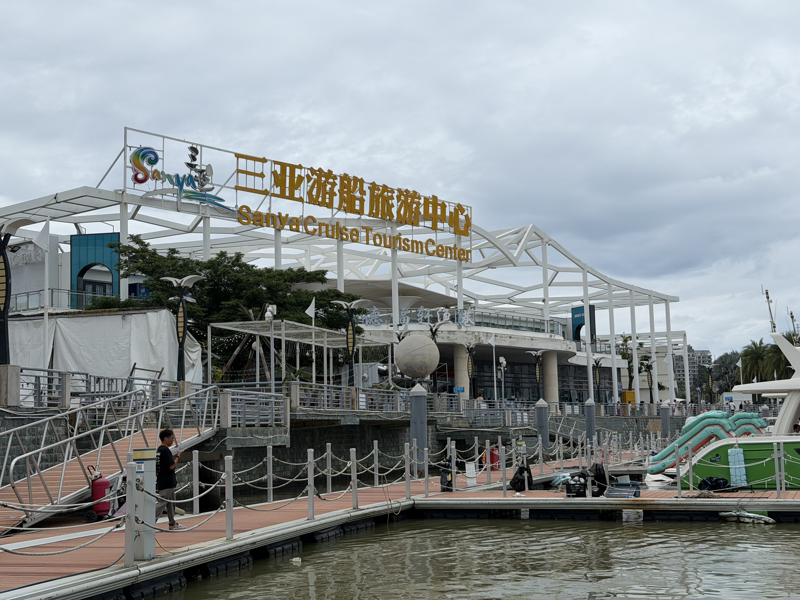
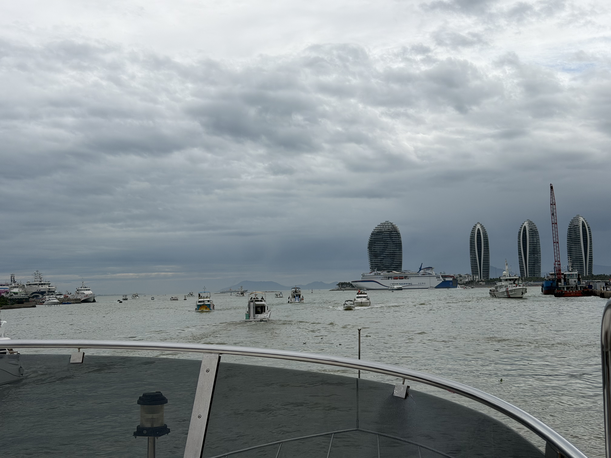

从码头坐小游艇去大游艇，天气还是阴阴的。
在船上体验了一下海钓。玩了一会儿正好遇到返程的船，我们也不太想继续玩了，就准备收杆走人。不巧的是线缠在一起了，我的线还挂到了什么东西，怎么都收不上来，最后交给工作人员处理，我们先上船回去。
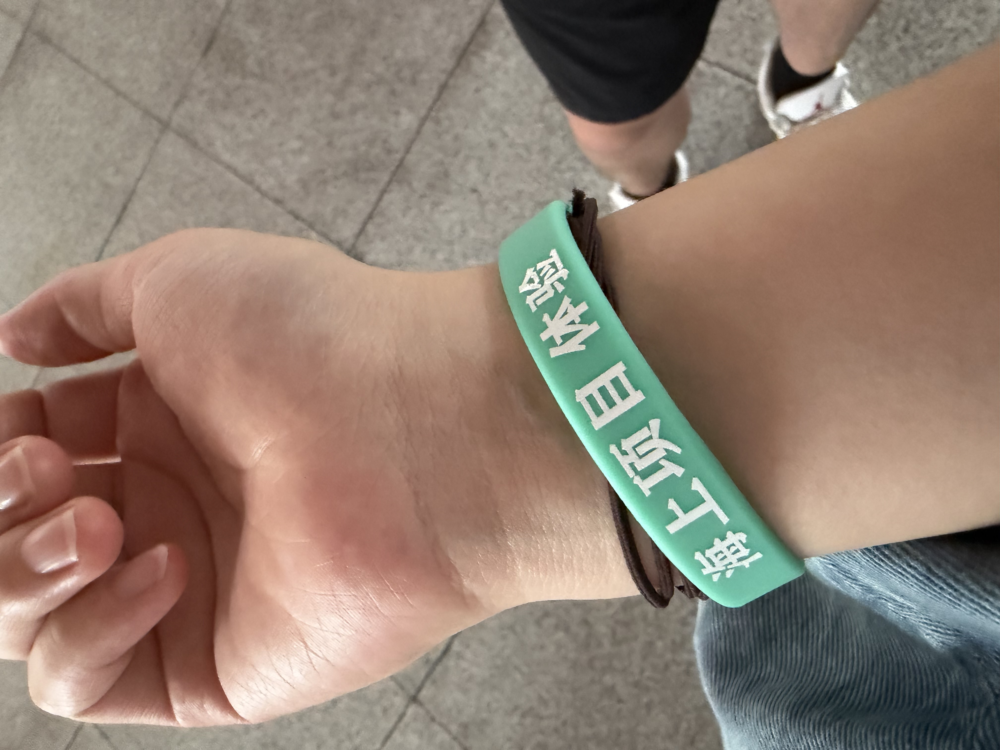
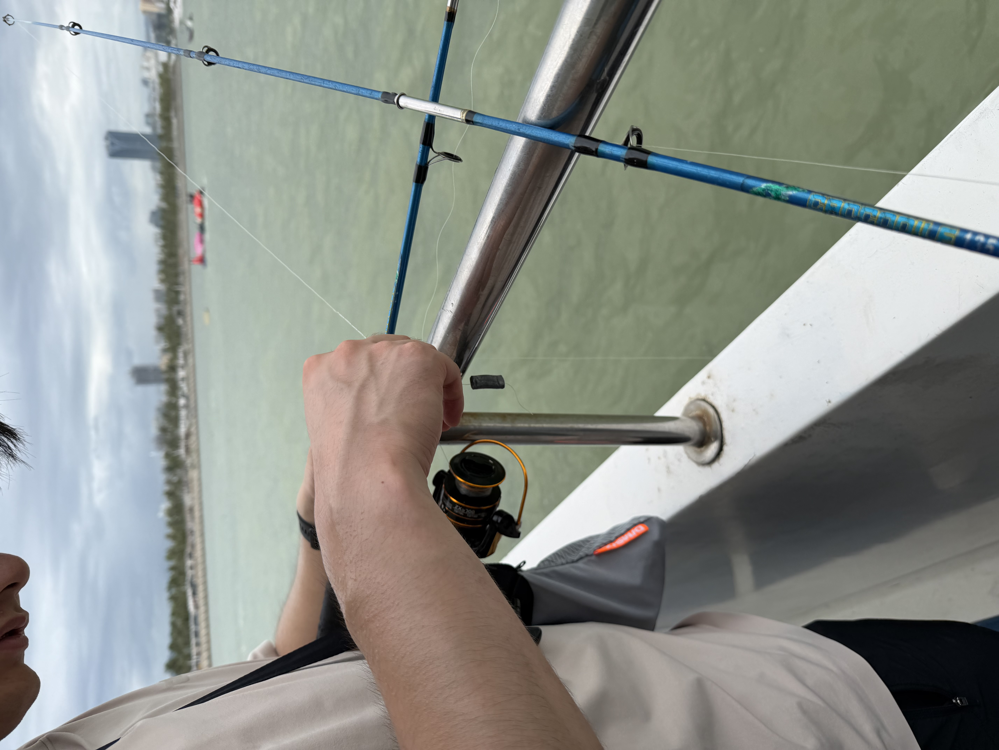
海上体验项目和海钓体验，最后以收线失败收尾。
晚上：糟粕醋、晚霞、泳池和 ONE 酒吧
晚上吃小老弟糟粕醋火锅，点了椰子水、椰奶、糟粕醋三拼锅。以前没吃过，感觉还挺新颖。椰子水和椰奶很好喝，可以直接当饮料，但拿来涮东西还是不太行。鲳鱼不错，很新鲜，也很香。
吃饭的时候下了一场阵雨，回酒店时雨停了，正好拍到很好看的晚霞。

离岛前一晚的晚霞，把前几天的阴雨都补回来了。
回房间换了泳衣去泳池玩了一会儿。回去洗个澡，准备去沙滩边逛逛，又发现有一个 ONE 沙滩酒吧。没忍住低消了一杯气泡果茶，听了会儿歌，就回房间睡觉了。

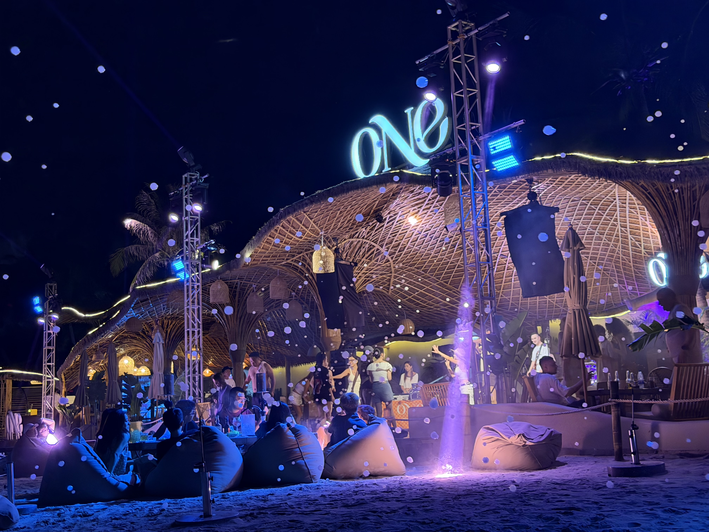
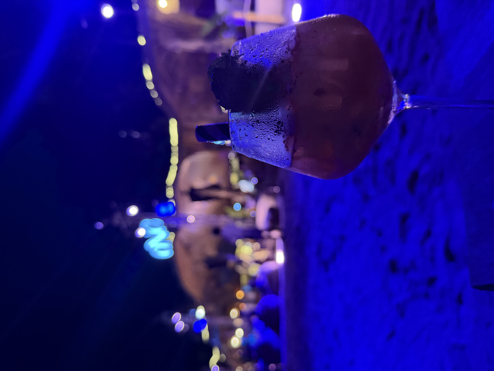
ONE 沙滩酒吧，适合给这趟旅行留一个慢一点的晚上。
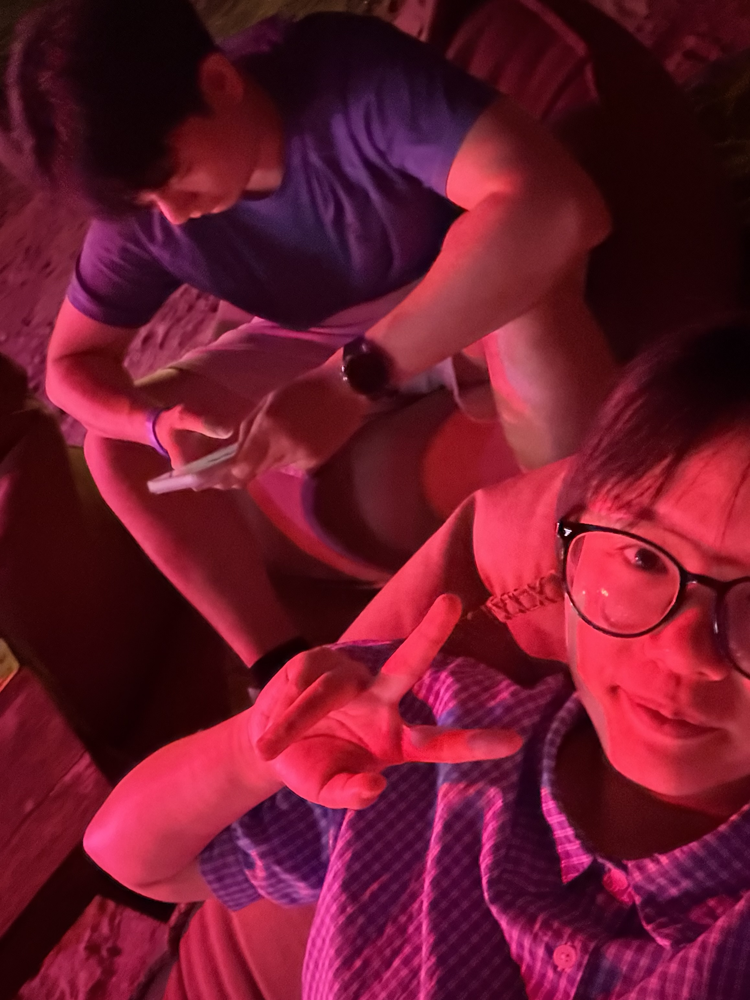
低消一杯气泡果茶，听完歌就回去睡觉。
7.7 启程返回
7 月 7 日中午飞长沙，下午回武汉，晚上用老街烧烤结束这趟三亚旅行。
回头看这几天，真正留下来的不只是海边。7 月 2 日是奔波和落地，7 月 3 日是台风和 CDF，7 月 4 日开始恢复出门，7 月 5 日被各种交通工具折腾，7 月 6 日终于换到亚龙湾看见晚霞。整趟行程没有完全按计划来，但每一天都有能记住的地方。